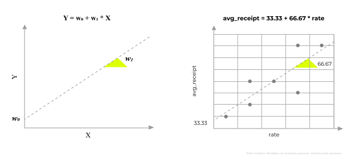
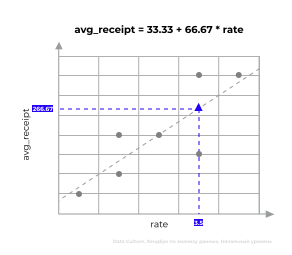
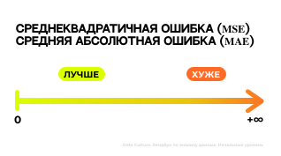

Хэндбук. Анализ данных. Начальный уровень
Глава 8. Линейная регрессия
8.1 Что такое регрессия?
Регрессия представляет собой мощный статистический инструмент, позволяющий выявлять и анализировать взаимосвязи между явлениями. Эта методика незаменима, когда необходимо установить, каким образом изменение одной величины влияет на другую величину. Регрессия помогает исследователю строить прогнозы, оценивать последствия различных воздействий и находить скрытые закономерности в данных. Применение регрессионного анализа широко востребовано в маркетинге, социологии и многих других областях науки и практики, обеспечивая глубокое понимание сложных процессов и принятие обоснованных решений.
Предположим, у нас есть выборка по семи ресторанам. Про каждый из этих ресторанов нам известен средний размер чека (avg_receipt), рейтинг (rate) и местоположение (area; 0 - центр, 1 - не центр):
import pandas as pd
df = pd.DataFrame()
df['avg_receipt'] = [50, 100, 200, 200, 150, 350, 350]
df['rate'] = [0.5, 1.5, 1.5, 2.5, 3.5, 3.5, 4.5]
df['area'] = [1, 1, 0, 0, 0, 0, 0]
df| avg_receipt | rate | area | |
|---|---|---|---|
| 0 | 50 | 0.5 | 1 |
| 1 | 100 | 1.5 | 1 |
| 2 | 200 | 1.5 | 0 |
| 3 | 200 | 2.5 | 0 |
| 4 | 150 | 3.5 | 0 |
| 5 | 350 | 3.5 | 0 |
| 6 | 350 | 4.5 | 0 |

Мы хотим выяснить, как рейтинг ресторана (rate) влияет на средний размер чека (avg_receipt) в нем. Запишем это в чуть более математической форме:
avg_receipt = w0 + w1 * rate
Мы хотим предсказать размер чека (avg_receipt). С точки зрения регрессии этот признак называется целевой или зависимой переменной. В уравнении линейной регрессии целевой переменной может выступать только количественный признак.
Рейтинг ресторана (rate) - фактор, оказывающий влияние на размер чека (avg_receipt). В модели регрессии рейтинг (rate) - это предиктор или независимая переменная. В отличие от целевой, предиктором может быть выступать и количественный, и категориальный признак.
На вопрос, как рейтинг (rate) влияет на размер чека (avg_receipt), отвечают параметры (коэффициенты) регрессии w0 и w1. w0 называют свободным коэффициентом. Он стоит в одиночестве, без пары, в отличие от w1 - коэффициента независимой переменной.
Регрессия, в которой только один предиктор (в нашем случае это рейтинг (rate)), называется однофакторной.
Но мы понимаем, что в реальной жизни не только рейтинг (rate) влияет на размер чека (avg_receipt). На него может влиять тип кухни, количество сотрудников и многое другое. Такая регрессия, с более чем одним предиктором, называется многофакторной. В наших данных, помимо рейтинга, есть еще местоположение (area). Если мы хотим добавить этот фактор в модель, то с точки зрения математики регрессию можно записать так:
avg_receipt = w0 + w1 * rate + w2 * area
rate, area - это независимые переменные регрессии.
w1, w2 - коэффициенты независимых переменных
w0 - свободный коэффициент
| ОДНОФАКТОРНАЯ | МНОГОФАКТОРНАЯ | |
|---|---|---|
| Уравнение регрессии | Ŷ = w0 + w1 * X | Ŷ = w0 + w1 * X1 + ... + wk * Xk |
| Целевая (зависимая) переменная только количественная |
Ŷ | Ŷ |
| Предикторы/независмые переменные | X | X1, ..., Xk |
| Параметры: | ||
| Коэффициенты независимой переменной |
w1 | w1, ..., wk |
| Свободный коэффициент | w0 | w0 |
8.2 Как обучить линейную регрессию?
После формализации модели нужно обучить ее. Обучить модель - значит рассчитать её параметры (w0, ..., wk). Параметры модели вычисляются по формулам, выведенным из метода наименьших квадратов (МНК), или на английском ordinary least squares (OLS).
Формулы метода наименьших квадратов
Коэффициент независимой переменной (w1):
w1 = ((x1-x̄)*(y1-ȳ)+...+(xn-x̄)*(yn-ȳ)) / ((x1-x̄)2+...+(xn-x̄)2)
x1, ... xn - каждое из значений предиктора
x̄ - среднее арифметическое предиктора
y1, ... yn - каждое значение целевой переменной
ȳ - среднее арифметическое целевой переменной
n - количество наблюдений (в наших данных 7 наблюдений)
Свободный коэффициент (w0):
w0 = ȳ - w1 * x̄
ȳ - среднее арифметическое целевой переменной
w1 - коэффициент независимой переменной
x̄ - среднее арифметическое предиктора
Мы сконцертируемся на том, как обучить модель с помощью библиотеки statsmodels.api. Первое, что нам нужно сделать - импортировать библиотеку; при импорте дадим ей короткий псеводним sm:
import statsmodels.api as sm
Ошибка ModuleNotFoundError: No module named 'statsmodels'
Если при запуске кода вышла такая ошибка, это значит, что модуль Statsmodels еще не установлен на компьютере. Чтобы его установить, нужно перед импортом добавить строку:
!pip install statsmodels
В эту библиотеку уже зашиты формулы метода наименьших квадратов, поэтому нам не придется их учить, а нужно будет лишь написать несколько несложных команд, чтобы найти значения параметров:
- Обозначаем целевую переменную:
Y = df['целевая']
- Обозначем предиктор(ы) и добавляем константный признак с помощью функции sm.add_constant() для корректного рассчета коэффициентов регрессии:
X = sm.add_constant(df['предиктор']) # однофакторная
илиX = sm.add_constant(df[['предиктор 1', 'предиктор 2', ...]]) # многофакторная
- Обучаем (.fit()) линейную регрессию с помощью метода наименьших квадратов (sm.OLS()):
модель = sm.OLS(Y, X).fit()
- Выводим параметры регрессии с помощью атрибута .params:
модель.params
| 0 | ||
|---|---|---|
| const | w0 | свободный коэффициент |
| предиктор 1 | w1 | коэффициент независимой переменной |
| предиктор 2 | w2 | коэффициент независимой переменной |
| ... | ... | ... |
Для начала обучим однофакторную модель, которая только на основе рейтинга ресторана (rate) будет предсказывать средний размер чека (avg_receipt):
avg_receipt = w0 + w1 * rate
Y = df['avg_receipt'] # целевая перемменая
X1 = sm.add_constant(df['rate']) # предиктор
model1 = sm.OLS(Y, X1).fit() #обучаем модель
model1.params # выводим параметры| 0 | |
|---|---|
| const | 33.333333 |
| rate | 66.666667 |
avg_receipt = 33.33 + 66.67 * rate
Для обучения многофакторной регрессии, которая предскажет размер чека (avg_receipt) не только на основе рейтинга ресторана (rate), но и по местоположению (area), нужно написать следующий код:
avg_receipt = w0 + w1 * rate + w2 * area
Y = df['avg_receipt'] # целевая перемменая
X2 = sm.add_constant(df[['rate', 'area']]) # предикторы
model2 = sm.OLS(Y, X2).fit() #обучаем модель
model2.params # выводим параметры
| 0 | |
|---|---|
| const | 100.438596 |
| rate | 48.245614 |
| area | -73.684211 |
avg_receipt = 100.44 + 48.25 * rate - 73.68 * area
8.3 Как интерпретировать линейную регрессию?
В прошлом разделе мы обучили линейную регрессию, а теперь нужно выяснить, что значат эти параметры.
ГЕОМЕТРИЧЕСКАЯ ИНТЕРПРЕТАЦИЯ
Рассмотрим уравнение однофакторной регрессии:
Ŷ = w0 + w1 * X
avg_receipt = 33.33 + 66.67 * rate
Такая регрессия на самом деле является уравнением прямой, которое вы наверняка проходили в школьном курсе геометрии. Если мы нанесем ее на диаграмму рассеяния, то она будет описывать тренд наших данных:
Свободный коэффициент w0 (33.33) - это место, где прямая пересекает ось Y, т.е. ось целевой переменной (avg_receipt)
Коэффициент независимой переменной w1 (66.67) регулирует угол наклона прямой. Если он положительный, как в нашем случае, это значит, признаки связаны прямой зависимостью, а если угол отрицательный, то обратной.
ПРАКТИЧЕСКАЯ ИНТЕРПРЕТАЦИЯ
Теперь рассмотрим, как можно объяснить практически полученные нами коэффициенты, и как можно интерепретировать регрессию в целом.
Для начала рассмотрим однофакторную регрессию:
avg_receipt = 33.33 + 66.67 * rate
Интерпретация регрессии
Предположим, что в городе появился новый ресторан. Мы знаем, что его рейтинг 3.5 балла (rate). И нам нужно выяснить, какой там средний размер чека. Все что нам нужно сделать, это вместо rate подставить 3.5 и посчитать:
33.33 + 66.67 * 3.5
266.675
Получается, что в ресторане с рейтингом 3.5 (rate) средний размер чека (avg_receipt) будет составлять 266.675 у.е..
Свободный коэффициент (w0)
В однофакторной регрессии свободный коэффициент (w0) показывает, чему будет равна целевая переменная (Ŷ), если предиктор (X) равен 0. В нашем случае – какой будет размер чека (avg_receipt) в ресторане с рейтингом (rate) 0. Согласно нашей модели, чек будет в среднем равен 33.33 у.е..
- Если предиктор (Xk) не может быть 0
- Если свободный коэффициент (w0) принимает недопустимые значения целевой переменной (Y)
Пример: Цена блюда = -10 + 0.5 * Вес
Вес блюда не может быть равным 0 (тогда блюда просто не будет существовать). Помимо этого, цена блюда не может быть отрицательной (тогда владельцам ресторана придется за него еще и доплачивать клиентам). Поэтому -10 здесь невозможно интерпретировать практически.Коэффициент независимой переменной (w1)
Коэффициент независимой переменной (w1) показывает, как будет меняться целевая (Ŷ) при изменении предиктора (X). В нашей модели, предсказывающей размер чека на основе рейтинга, коэффициент независимой переменной равен 66.67. Это значит, что если рейтинг ресторана (rate) вырастет на 1 балл, это увеличит средний размер чека (avg_receipt) в нем на 66.67 у.е.. Если рейтинг (rate) вырастет на 2 балла, размер чека (avg_receipt) возрастет на 133.33 у.е., и так далее.
В случае, когда предиктор (Xk) является количественным, как в нашем случае, то можно формализовать интепретацию его коэффициента (wk) следующим образом:
- wk > 0
- если Xk увеличивается на n, Ŷ увеличится на wk * n
- wk < 0
- если Xk увеличивается на n, Ŷ уменьшится на wk * n
- w0 = 0
- X не оказывает влияние на Ŷ
Интерпретация многофакторной регрессии в целом имеет такую же логику, как и в простом варианте модели, но с несколькими нюансами. Давайте рассмотрим их на основе этой модели:
avg_receipt = 100.44 + 48.25 * rate - 73.68 * area
Интерпретация регрессии
Мы знаем, что рейтинг нового ресторана 3.5. Теперь нам стало известно, что он расположен не в центре города (1; area), тогда можно воспользоваться чуть более сложной моделью, которая даст нам более точный результат:
100.44 + 48.25 * 3.5 - 73.68 * 1
195.635
Средний чек (avg_receipt) в ресторане с рейтингом 3.5 (rate), который расположен не в центре города (1; area), будет, составлять, примерно, 195.636 у.е.
Свободный коэффициент (w0)
В многофакторной регрессии свободный коэффициент (w0) показывает, чему будет равна целевая переменная (Ŷ), если все предикторы (X1, ..., Xk) равны 0.
В нашей модели, если рейтинг ресторана (rate) равен 0 и ресторан расположен в центре (0; area), то средний размер чека (avg_receipt) составляет 100.44 у.е..
Свободный коэффициент в многофакторных моделях также не всегда можно интерпретировать. Делать это можно только если все предикторы одновременно могут быть равны 0, и свободный коэффициент принимает допустимые значения целевой переменной. В нашем случае это возможно.
Коэффициенты независимых переменных (w1, w2, ...)
Начнем с коэффициента перед предиктором рейтинг (rate), котороый равен 48.25. Рейтинг является количественной величиной, значит интерпретация следующая: если рейтинг (rate) увеличится на 1 балл, размер чека (avg_receipt) вырастет на 48.25 у.е., при прочих равных.
Второй предиктор модели – это расположение ресторана (area). Этот признак является бинарным и принимает только два значния: 0 - центр города, 1 - не центр города. Коэффициент перед этим предиктором равен -73.68, значит интепретация следующая: если ресторан расположен не в центре города (1; area), это снижает размер чека на 73.68 у.е., при прочих равных.
При интерпретации коэффициента (wk) бинарного предиктора (Xk), закодированного 0 и 1, нужно пользоваться следущей логикой:
- wk > 0
- если Xk равен 1, Ŷ увеличится на w1
- если Xk равен 0, Ŷ не увеличится на w1
- wk < 0
- если Xk равен 1, Ŷ уменьшится на w1
- если Xk равен 0, Ŷ не уменьшится на w1
- w0 = 0
- Xk не оказывает влияние на Ŷ
Если бинарный предиктор (Xk) закодирован не 0 и 1, а например 1 и 2, или какими-то другими двумя числами (назовем их переменными a и b), интерпретация коэффициента (wk) немного меняется:
- wk > 0
- если Xk равен a, Ŷ увеличится на w1*a
- если Xk равен b, Ŷ увеличится на w1*b
- wk < 0
- если Xk равен a, Ŷ уменьшится на w1*a
- если Xk равен b, Ŷ уменьшится на w1*b
- w0 = 0
- Xk не оказывает влияние на Ŷ
| Ŷ = w0 + w1 * X1 - w2 * X2 | ||
|---|---|---|
| Cвободный коэффициент | w0 | Если все предикторы равны 0, то Ŷ равен w0. не всегда можно интерпретировать |
| Коэффициенты независимых переменных |
||
| X1 количественный | w1 | Если X1 увеличится на n, Ŷ увеличится на w1 * n |
| X1 бинарный (принимает значения 0, 1) |
w1 | Если X1 равен 1, Ŷ увеличится на w1. Если X1 равен 0, Ŷ не увеличится на w1. |
| X1 бинарный (принимает значения a, b) |
w1 | Если X1 равен a, Ŷ увеличится на w1 * a. Если X1 равен b, Ŷ увеличится на w1 * b. |
| X2 количественный | -w2 | Если X2 увеличится на n, Ŷ снижается на w2 * n |
| X2 бинарный (принимает значения 0, 1) |
-w2 | Если X2 равен 1, Ŷ снижается на w2. Если X2 равен 0, Ŷ не снижается на w2. |
| X2 бинарный (принимает значения a, b) |
-w2 | Если X2 равен a, Ŷ снижается на w2 * a. Если X2 равен b, Ŷ снижается на w2 * b. |
8.4 Как оценить качество линейной регрессии?
Остается последний вопрос: как понять, хорошие модели мы построили или плохие? Чтобы получить ответ, нужно воспользоваться метриками оценки качества моделей. Мы рассмотрим три из них: коэффициент детерминации(R2), среднеквадратичную ошибку (MSE) и среднюю абсолютную ошибку (MAE).
КОЭФФИЦИЕНТ ДЕТЕРМИНАЦИИ (R2)
Это показатель, который демонстрирует, насколько точно построенная модель объясняет поведение интересующей нас переменной.
Представьте ситуацию: вы обучили модель линейной регрессии и наложили ее на диаграмму рассеяния ваших данных. Чем больше точки приближены к этой линии регрессии, тем точнее ваша модель описывает реальность. Именно коэффициент детерминации (R2) отражает долю вариации ваших данных, которую можно объяснить моделью.
Коэффициент детерминции меняется в диапазоне от 0 до 1. Чем он ближе к 1, тем лучше наша модель.
Теоретически, если R2 равен 1, это означает идеальную точность модели, но на практике это скорее будет свидетельствовать о том, что модель слишком усложнили, или совершили ошибки при ее разработке или обучении. Оптимальным показателем считается величина около 0.7–0.9, которая демонстрирует хорошую прогностическую способность и стабильность модели.
Если коэффициент детерминации получился не больше 0.5, значит построенной модели не стоит доверять, так как она описывает не более 50% изменений нашей целевой переменной.

Чтобы получить коэффициент детерминации (R2), нужно обратиться к атрибуту .rsquared обученной модели. Сравним коэффициент детерминации для однофакторной (model1) и многофакторной (model2) регрессий, которые мы построили:
model1.rsquared
np.float64(0.6666666666666667)
model2.rsquared
np.float64(0.712719298245614)
Однофакторная регрессия (model1) описывает 66.67% изменений размера чека (avg_receipt) в наших данных.
Многофакторная регрессия (model2) описывает 71.27% изменений размера чека (avg_receipt) в наших данных.
Обеим моделям можно доверять, но качество многофакторной регрессии немного лучше.
СРЕДНЕКВАДРАТИЧНАЯ ОШИБКА (MSE) И СРЕДНЯЯ АБСОЛЮТНАЯ ОШИБКА (MAE)
Качество модели можно оценить не только через долю данных, которые она описывает, но и через размер ошибки. Ошибкой модели называют отклонение реальных значений целевой переменной (Y) от предсказанных (Ŷ).
Рассмотрим нашу однофакторную регрессию:
avg_receipt = 33.33 + 66.67 * rate
Реальные значения – это признак avg_receipt (Y). Чтобы найти предсказанные значения (Ŷ), применим функцию .predict():
модель.predict(предикторы)
df['pred_avg_receipt'] = model1.predict(X1)
df
| avg_receipt | rate | area | pred_avg_receipt | |
|---|---|---|---|---|
| 0 | 50 | 0.5 | 1 | 66.666667 |
| 1 | 100 | 1.5 | 1 | 133.333333 |
| 2 | 200 | 1.5 | 0 | 133.333333 |
| 3 | 200 | 2.5 | 0 | 200.000000 |
| 4 | 150 | 3.5 | 0 | 266.666667 |
| 5 | 350 | 3.5 | 0 | 266.666667 |
| 6 | 350 | 4.5 | 0 | 333.333333 |
Этот метод взял каждое значение предиктора (rate), подставил его в уравнение регрессии (avg_receipt = 33.33 + 66.67 * rate) и нашел для них предсказанное значение целевой переменной (pred_avg_receipt).
Теперь мы можем найти ошибку на каждом наблюдении, просто найдя разность между реальными и предсказанными значениями целевой переменной:
en = y - ŷ
df['error'] = df['avg_receipt'] - df['pred_avg_receipt']
df
| avg_receipt | rate | area | pred_avg_receipt | error | |
|---|---|---|---|---|---|
| 0 | 50 | 0.5 | 1 | 66.666667 | -16.666667 |
| 1 | 100 | 1.5 | 1 | 133.333333 | -33.333333 |
| 2 | 200 | 1.5 | 0 | 133.333333 | -66.666667 |
| 3 | 200 | 2.5 | 0 | 200.000000 | 0 |
| 4 | 150 | 3.5 | 0 | 266.666667 | -116.666667 |
| 5 | 350 | 3.5 | 0 | 266.666667 | 83.333333 |
| 6 | 350 | 4.5 | 0 | 333.333333 | 16.666667 |
Расмотрим внимательнее ошибку (error):
- Если e < 0, то реальное значение ниже, чем предсказание модели (модель завысила значение)
- Если e > 0, то реальное значение выше, чем предсказание модели (модель занизила значение на этом наблюдении)
- Если e =0, то реальное значение совпадает с предсказанным, то есть модель на этом наблюдении не ошибается
Если мы хотим найти, на сколько в среднем ошибается модель, мы не можем просто сложить все ошибки и разделить на количество наблюдений, так как ошибка бывает положительной и отрицательной. Чтобы избавиться от знаков, можно взять квадрат ошибки или её модуль, и вот эту сумму квадратов или модулей разделить на количество наблюдений. Такие метрики называются среднеквадратичной ошибкой (MSE) и средней абсолютной ошибкой (MAE):
MSE = ((y1 - ŷ1)2+...+(yn - ŷn)2)/n = ((avg_receipt1 - avĝ_receipt1)2+...+(avg_receiptn - avĝ_receiptn)2)/n
MAE = (|y1 - ŷ1|+...+|yn - ŷn|)/n = (|avg_receipt1 - avĝ_receipt1|+...+|avg_receiptn - avĝ_receiptn|)/n
yn, avg_receiptn - реальные значения целевой переменной
ŷn, avĝ_receiptn - предсказанные значения целевой переменной
yn - ŷn, avg_receiptn - avĝ_receiptn - ошибки модели
n - количество наблюдений
Обе эти метрики меняются в диапазоне от 0 до +∞. Чем меньше значение этих метрик, тем лучше наша модель.
В теории, если оказалось, что MSE и MAE равны 0, это значит, что наша регрессия не ошибается, и мы построили идеальную модель. Но на практике, как и коэффициент детерминации (R2) равный 1, это сигнал для нас, что с моделью что-то не так.
При этом в отличии от коэффициента детерминации (R2), MSE и MAE не имеют никакой градации, они используются для сравнения моделей между собой. Лучше будет та модель, у которой эти метрики будут меньше.
Теперь рассчитаем среднеквадратичную (MSE) и среднюю абсолютную ошибку (MAE) для нашей модели:
(df['error']**2).sum() / 7 # MSE
np.float64(3809.523809523809)
Усреднный квадрат ошибка модели равен 3809.52 у.е2
abs(df['error']).sum() / 7 # MAE
np.float64(47.619047619047606)
В среднем, модель ошибается на 47.62 у.е
Для рассчет этих метрик можно воспользоваться функциями из модуля statsmodels.tools.eval_measures. Для начала модуль и функции нужно импортировать:
from statsmodels.tools.eval_measures import mse, meanabs
Чтобы найти среднеквадратичную ошибку (MSE), нужно воспользоваться функцией mse со следующими параметрами:
mse(целевая, предсказанные значения)
Сравним среднеквадратичную ошибку (MSE) однофакторной и многофакторной модели:
# avg_receipt = 33.33 + 66.67 * rate
mse(Y, df['pred_avg_receipt'])
np.float64(3809.523809523809)
# avg_receipt = 100.44 + 48.25 * rate − 73.68 * area
y_pred = model2.predict(X2)
mse(Y, y_pred)
np.float64(3283.208020050126)
Как мы видим, среднеквадратичная модель в нашей многофакторной модели ниже, чем в однофакторной. Значит многофакторная модель лучшего качества.
Чтобы рассчитать среднюю абсолютную ошибку (MAE), воспользуемся функцией meanabs:
meanabs(целевая, предсказанные значения)
Теперь сравним среднюю абсолютную ошибку (MAE) моделей:
# avg_receipt = 33.33 + 66.67 * rate
meanabs(Y, df['pred_avg_receipt'])
np.float64(47.619047619047606)
# avg_receipt = 100.44 + 48.25 * rate − 73.68 * area
y_pred = model2.predict(X2)
meanabs(Y, y_pred)
np.float64(40.35087719298245)
Средняя абсолютная ошибка второй модели, также ниже. Значит вторая модель лучше.
| Предсказанные значения | |
|---|---|
| Обозначение | Ŷ, ŷi |
| Рассчет | модель.predict(предиктор)* |
| Коэффициент детерминации | Среднеквадратичная ошибка | Средняя абсолютная ошибка | |
|---|---|---|---|
| Обозначение | R2 | MSE | MAE |
| Формула | 1-((y1 - ŷ1)2 + ... + (yn - ŷn)2) / ((y1 - ȳ1)2 + ... + (yn - ȳn)2) | ((y1 - ŷ1)2 + ... + (yn - ŷn)2)/n | (|y1 - ŷ1| + ... + |yn - ŷn|)/n |
| Диапазон значений | от 0 до 1 | от 0 до +∞ | от 0 до +∞ |
| Интерпретация | Чем ближе к 1, тем лучше | Чем ближе к 0, тем лучше | Чем ближе к 0, тем лучше |
| Расчет | модель.rsquared* | mse(целевая, предсказанные значения)** | meanabs(целевая, предсказанные значения)** |
* для использования импортируйте import statsmodels.api as sm
** для использования импортируйте from statsmodels.tools.eval_measures import mse, meanabs
УЛУЧШЕНИЕ КАЧЕСТВА МОДЕЛИ
Довольно часто, при работе с реальными данными, качество регрессии может быть настолько низким, что результатам моделирования просто нельзя верить. Тогда аналитику приходится проделать ряд шагов, чтобы улучшить модель. Для начала он удалит выбросы и заменит пропуски. Затем ему нужно понять какие предикторы стоит взять в модель. У него не так много наблюдений, а он знает, что каждый предиктор должен быть обеспечен минимум 100 наблюдениями. То есть для построения однофакторной модели хватит 100 наблюдений, но например если в модели 500 наблюдений в модель можно взять не более 5 предикторов. Чтобы понять какие предикторы стоит взять, он постоит гистограммы распределения и выделит унимодальные симметричные распределения. После чего он рассчитает корреляцию Пирсона для количественный данных и Спирмана для категориальных, выделив какие из признаков имеют самую сильную корреляцию с целевой переменной. При этом эти между самими предикторами, отобранными в модель, корреляция не должна превышать 0.7. Проделав эти шаги, качество регрессии, которую строит аналитик, будет значительно выше.